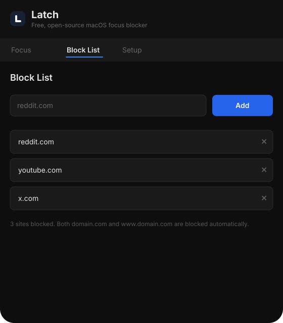
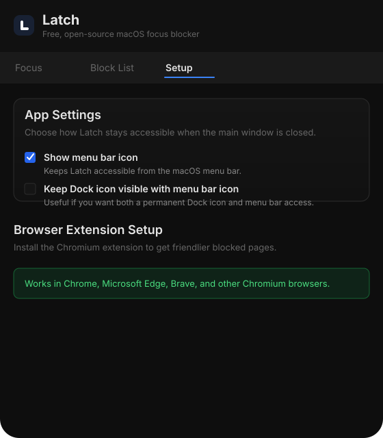

Latch
A simple macOS focus blocker that stays local.
Latch blocks distracting sites with timed sessions, local blocklists, menu bar support, and a Chromium extension for a cleaner blocked-page experience.
What it does
Latch focuses on a tight macOS-only workflow: start a session, block the sites you care about, and optionally load a Chromium extension for friendlier blocked pages.
Timed and always-on sessions
Use quick focus timers or keep blocking active until you deliberately turn it off.
Local blocklists
Your domains and preferences stay on-device. No accounts, no sync, no cloud backend.
Native macOS workflow
Menu bar support, crash recovery, and a one-time privileged helper install.
Desktop pages



Download and load the extension
Desktop app
- Open the latest GitHub release.
- Download the macOS DMG.
- Install and launch Latch.
- Approve the one-time helper install when prompted.
Chromium extension
- Download Latch-chrome-extension.zip from the same release.
- Unzip it.
- Open
chrome://extensions. - Enable Developer mode.
- Click Load unpacked and choose the extracted
chromefolder.